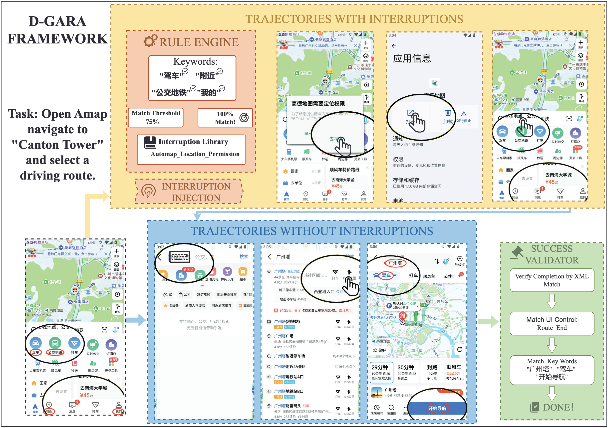

About
I am a Ph.D. student at the School of Computer Science and Technology, Tongji University, advised by Prof. Yi Bin, and a member of the Spatial Intelligence Group (SIG) at Tongji University. My research lies in Spatial Intelligence — building agents that perceive, reason about, and act within the physical and digital world.
My current focus is on Vision-Language-Action (VLA) world action models: learning unified representations that connect visual perception, language understanding, and action generation, so that embodied and interactive agents can operate robustly in the real world. Previously I worked on the robustness of GUI agents and on the topological properties of fractal networks.
Education
Research Interests
I am broadly interested in how intelligent agents acquire a usable model of the world. I study VLA world action models as a path toward agents that ground language and perception in action, and I care about the reasoning robustness, grounding accuracy, and task-completion reliability that make such agents dependable outside idealized lab settings.
Publications

AAAI 2026D-GARA: A Dynamic Benchmarking Framework for GUI Agent Robustness in Real-World Anomalies ACCEPTED
Sen Chen, Tong Zhao, Yi Bin, Fei Ma, Wenqi Shao, Zheng Wang
Research Experience
Developing Vision-Language-Action world action models that unify perception, language, and action for embodied and interactive agents. The goal is robust spatial reasoning and reliable action generation in real-world environments.
Identified that mainstream GUI agents are limited by anomaly-free training and evaluation. Built a dynamic benchmarking framework to model real-world anomalies and diagnosed three core weaknesses in multimodal reasoning — visual grounding precision, reasoning-chain fragility, and task-endpoint detection.
Studied the geometric properties of fractal structures — self-similarity, scale invariance, and recursiveness — and their value for modular, hierarchical node addressing and routing in large-scale distributed systems.
Awards & Honors
- 18th "Challenge Cup" — "Black Technology" Exhibition "Star" Award (FAST Invited Project)
- 2024 China International College Students' Innovation Competition Shanghai Region Gold Award
- 17th National College Students' Innovation Annual Conference "My Favorite Project"
- English Proficiency CET-4: 598 · CET-6: 563